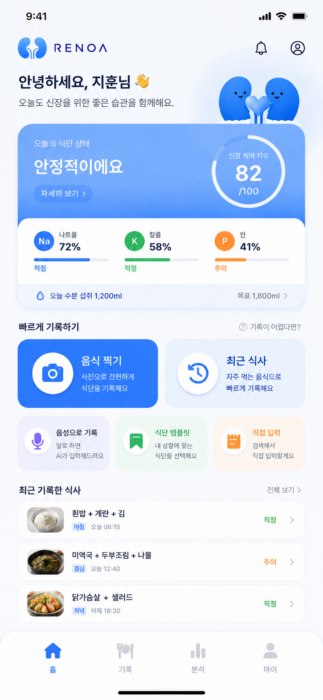

📸
스캔
음식 사진을 찍으면 AI가 나트륨·칼륨·인을 분석하고, 내 단계에 맞는 답을 알려드려요.
AI 식단 분석 →나트륨·칼륨·인까지 — 어려운 식단 관리를 사진 한 장으로 간편하게. 레노아가 내 상황에 꼭 맞는 식단을 매일 다정하게 챙겨드려요.

매일의 식사부터 검사 수치, 복약, 보호자 케어까지 — 레노아가 빈틈없이 챙겨드려요.
음식 사진을 찍으면 AI가 나트륨·칼륨·인을 분석하고, 내 단계에 맞는 답을 알려드려요.
AI 식단 분석 →체중·혈압·검사 수치를 한눈에. eGFR, 칼륨, 인 추이를 친절한 그래프로 보여드려요.
건강 추이 보기 →식사에 맞춰 약 먹을 시간을 알려드리고, 복약 체크와 약 정보를 함께 관리해요.
복약 알림 →보호자가 멀리서도 함께 살펴요. 위험 알림과 응급 매뉴얼로 가족이 든든하게.
함께 돌보기 →복잡한 영양 정보 대신, 하루를 0~100점으로 다정하게 요약해드려요. 색만 봐도 오늘의 상태를 바로 알 수 있어요.
가장 편한 방법으로 기록해요. 어떤 방법이든 1분이면 충분해요.
음식을 카메라로 찍기만 하면, AI가 메뉴와 영양 정보를 알아서 채워드려요.
"점심에 미역국 먹었어요"처럼 말로 하면, AI가 듣고 대신 입력해드려요.
자주 먹는 식단과 내 상황에 맞는 추천 식단을 골라 한 번에 기록해요.
같은 음식도 신장 단계에 따라 답이 달라져요. 레노아는 내 상태를 알기에, 고민되는 음식에 괜찮아요 · 주의해요 · 피해요로 명확하게 답해드려요.
설치는 무료예요. 첫 식사를 기록하는 순간부터, 레노아가 곁에서 다정하게 챙겨드릴게요.